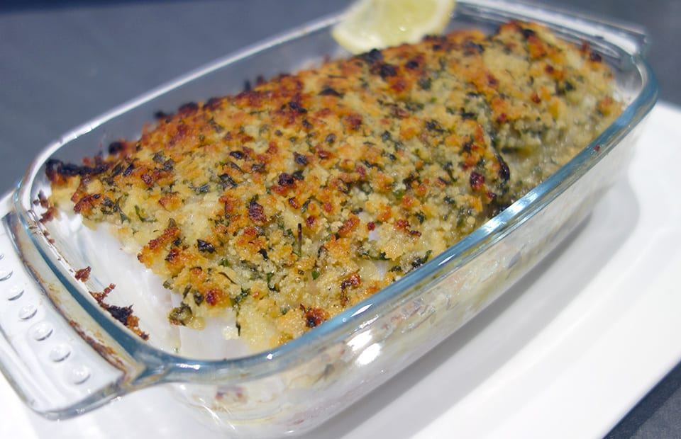

Poisson à la Bordelaise

A propos
Cette recette de poisson à la bordelaise est très parfumée et surtout super rapide à faire. A la maison nous aimons beaucoup le dos de cabillaud car c’est un morceau généreux et facile à préparer. La croûte est composée d’une préparation à base de chapelure, d’ail et d’échalotes fondus au vin blanc et de persil. Ce plat est parfait un soir de semaine, servi avec des légumes vapeur c’est encore meilleur ou avec des pâtes pour les plus gourmands, miam, miam.
En bref
Ingredient
Pour 3 personnes
1 cuillière à soupe d'huile d'olive
10g de beurre au cristaux de sel
Préparation
Éplucher l'ail et les échalotes puis les hacher finement ensemble. Réserver.
Faire fondre le beurre dans une casserole à feu doux/moyen et y faire revenir l'ail et l'échalote mixés pendant 5 minutes pour qu'ils soient fondants.
Déglacer au vin blanc jusqu'à évaporation du vin.
Verser ce mélange dans un bol, ajouter la chapelure et le persil et mélanger pour obtenir un mélange homogène.
Préchauffer le four à 180°C.
Verser l'huile d'olive dans un plat allant au four type plat à gratin.
Déposer le dos de cabillaud, assaisonner et disposer le mélange à base de chapelure dessus uniformément.
Enfourner pendant 10 à 15 minutes environ, en fonction de l'épaisseur du poisson.
Servir aussitôt avec du citron.